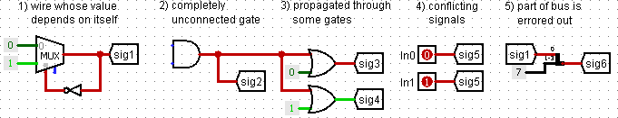

Due Sunday, March 24th, 2015 @ 11:59 PM
IMPORTANT INFO - PLEASE READ
Even though this project is broken into two parts, the second part is substantially more involved than the first. We have released the entire ISA so that you can get started on the deliverables for part 2 (cpu.circ and mem.circ) as soon as possible. We will have you submit the deliverables for part 1 (alu.circ and regfile.circ) first, but feel free to keep improving them for part 2. Do not procrastinate. Post any questions or comments to Piazza.
Do not worry if some parts of the spec are missing, they are slated for release with part 2 of the project. Specifically, we will release an assembler, some test cases for the cpu itself, and a short coding assignment.
This project spec is ridiculously long, but don't fret! We've spelled out many things in excruciating detail, so if you just take things one-by-one, it won't be as bad as it looks.
We are also providing a set of abridged project notes to look at. These will NOT substitute for reading through the actual project specs, but can be used as a quick reference later on.
Based on original spec by Ben Sussman and Brian Zimmer, and modified spec of Albert Chae, Paul Pearce, Noah Johnson, Justin Hsia, Conor Hughes, Anirudh Todi, Ian Vonseggern, Sung Roa Yoon, and Alan Christopher. Much thanks to Conor Hughes for an excellent autograder.
Updates
Changelog:
-
Update #2.7 (3/21/15 6:15 PM)
- Clarifications on jr and jal concerning storing word-addressed addresses
-
Update #2.6 (3/21/15 12:02 PM
- Clarification in the ISA section on jr and jal with address offsets. Added jr test.
-
Update #2.5 (3/20/15 4:30 PM)
- Clarified that we are working with memory in little endian.
-
Update #2.4 (3/19/15 9:00 PM)
- Added return case if no palindrome is found
-
Update #2.3 (3/19/15 12:50 PM)
- Updated Assembler to fix errors with shifts
-
Update #2.2 (3/17/15 6:00 PM)
- Updated Assembler to fix errors with jr and $sp
- Added halt.s to the starter repo
-
Update #2.1 (3/16/15 3:30 PM)
- Removed the RESET input from CPU
-
Release #2.0 (3/15/15 6:00 PM)
- Project 2-1 Initial Release
- Added requirement for an LED for signed overflow in CPU
- Added information for obtaining the new tests and submitting proj2-2
- Added information for testing proj2-2
- Added deliverable 6
-
Update #1.2 (3/12/15 9:00 PM)
- Clarified the use of registers in the processor section.
- Clarified which input to use for lfsr.
-
Update #1.1 (3/10/15 1:30 PM)
- Updated ISA table and took out the sb instruction
- Updated ALU and ISA table to include add and sub instructions
- Clarified register numeric representation in ISA section
- Added link to an explanation of signed overflow in ALU section
-
Release #1.0 (3/8/15 6:00 PM)
- Project 2-1 Initial Release
Updates | Overview | Deliverables | ISA | Logisim | Testing | Submission
Updates and Clarifications
- Nothing yet!
Updates | Overview | Deliverables | ISA | Logisim | Testing | Submission
Overview
- MAKE SURE TO CHECK YOUR CIRCUITS WITH THE GIVEN HARNESSES TO SEE IF THEY FIT! YOU WILL FAIL ALL OUR TESTS IF THEY DO NOT.
(This also means that you should not be moving around given inputs and outputs in the circuits). - This is a PARTNER project. If you don't have a Github repository yet, email Fred and William.
- Sample tests for a completed ALU and Regfile have been included in the proj2-1StartKit. Given the current directory structure, you can run the bash script (short-test.sh) with your *.circ files in the same directory and it will run the autograder. We recommend running the sample tests locally, but the autograder only works with python 2.7. These tests are NOT comprehensive, you will need to do further testing on your own.
- You are allowed to use any of Logisim's built-in blocks for all parts of this project.
- Save often. Logism can be buggy and the last thing you want is to lose some of your hard work. There are students every semester who have had to start over large chunks of their projects due to this.
In this project you will be using Logisim to create a 32-bit two-cycle processor. It is similar to MIPS, except that memory addresses represent 32-bit words instead of 8-bit bytes (word-addressed instead of byte-addressed). Also, all addresses are 24-bits wide instead of 32-bits, due to limitations in Logisim. Throughout the implementation of this project, we'll be making design choices that make it compatible with machine code outputs from MARS and your Project 1!
Please read this document CAREFULLY as there are key differences between the processor we studied in class and the processor you will be designing for this project.
Pipelining
Your processor will have a 2-stage pipeline:
- Instruction Fetch: An instruction is fetched from the instruction memory.
- Execute: The instruction is decoded, executed, and committed (written back). This is a combination of the remaining stages of a normal MIPS pipeline.
You should note that data hazards do NOT pose a problem for this design, since all accesses to all sources of data happens only in a single pipeline stage. However, there are still control hazards to deal with. Our ISA does not expose branch delay slots to software. This means that the instruction immediately after a branch or jump is not necessarily executed if the branch is taken. This makes your task a bit more complex. By the time you have figured out that a branch or jump is in the execute stage, you have already accessed the instruction memory and pulled out (possibly) the wrong instruction. You will therefore need to "kill" instructions that are being fetched if the instruction under execution is a jump or a taken branch. Instruction kills for this project MUST be accomplished by MUXing a nop into the instruction stream and sending the nop into the Execute stage instead of using the fetched instruction. Notice that 0x0000 is a nop instruction; please use this, as it will simplify grading and testing. You should only kill if a branch is taken (do not kill otherwise), but do kill on every type of jump.
Because all of the control and execution is handled in the Execute stage, your processor should be more or less indistinguishable from a single-cycle implementation, barring the one-cycle startup latency and the branch/jump delays. However, we will be enforcing the two-pipeline design. If you are unsure about pipelining, it is perfectly fine (maybe even recommended) to first implement a single-cycle processor. This will allow you to first verify that your instruction decoding, control signals, arithmetic operations, and memory accesses are all working properly. From a single-cycle processor you can then split off the Instruction Fetch stage with a few additions and a few logical tweaks. Some things to consider:
- Will the IF and EX stages have the same or different PC values?
- Do you need to store the PC between the pipelining stages?
- To MUX a nop into the instruction stream, do you place it before or after the instruction register?
- What address should be requested next while the EX stage executes a nop? Is this different than normal?
You might also notice a bootstrapping problem here: during the first cycle, the instruction register sitting between the pipeline stages won't contain an instruction loaded from memory. How do we deal with this? It happens that Logisim automatically sets registers to zero on reset; the instruction register will then contain a nop. We will allow you to depend on this behavior of Logisim. Remember to go to Simulate --> Reset Simulation (Ctrl+R) to reset your processor.
Updates | Overview | Deliverables | ISA | Logisim | Testing | Submission
Deliverables
Approach this project like you would any coding assignment: construct it piece by piece and test each component early and often!
Tidyness and readability will be a large factor in grading your circuit if there are any issues, so please make it as neat as possible! If we can't comprehend your circuit, you will probably receive no partial credit.
Project 2-1
0) Obtaining the Files [show]
1) Register File [show]
2) Arithmetic Logic Unit (ALU) [show]
Project 2-2
3) Obtaining the Files - Part 2 [show]
4) Processor [show]
5) Data Memory [show]
6) Test Code [show]
Updates | Overview | Deliverables | ISA | Logisim | Testing | Submission
Instruction Set Architecture (ISA)
You will be implementing a simple 32-bit two-cycle processor with 32 registers, but your regfile will only be responsible for four of them ($t0 - $t3). The numeric values for these registers are the same as the green sheet. It will have separate data and instruction memory. Just like MIPS, each of the four registers that you will be implementing is big enough to hold ONE word.
Your processor will be similiar to MIPS, except for memory addressing. Memory addresses will represent 32-bit words instead of 8-bit bytes. This means that the memory modules are word-addressed instead of byte-addressed. However, note that your instructions will be using byte-addressing, as it should be normal MIPS code. Make sure you keep track of which addresses are byte-addressed and which are word-addressed when thinking about MIPS instruction addressing, the instruction memory module, MIPS data addressing, and the data memory module!
IMPORTANT: Because of the limitations of Logisim, our memory addess will be 24 bits, unlike the normal 32 bit memory address in MIPS. Which bits would we need to truncate so that as many translations of MIPS code is supported as possible?
The instructions we will be looking at is below. Your processor will pull out a 32-bit value from instruction memory and determine the meaning of that instruction by looking at the opcode (the top 6 bits, which are bits 31-26). If the instruction is an R-type (i.e. opcode == 0), then you must also look at the funct field.
Notice how we do not use all the instructions in MIPS. Your project only has to work on these specified instructions, most of which you should have seen in project 1 along with a few extra ones, although we have taken out sb to simplify your memory file. This way the project is shorter and easier.
| Instruction | Format |
| Add | add $rd, $rs, $rt |
| Add Unsigned | addu $rd, $rs, $rt |
| Sub | sub $rd, $rs, $rt |
| Sub Unsigned | subu $rd, $rs, $rt |
| And | and $rd, $rs, $rt |
| Or | or $rd, $rs, $rt |
| Set Less Than | slt $rd, $rs, $rt |
| Set Less Than Unsigned | sltu $rd, $rs, $rt |
| Jump Register | jr $rs |
| Shift Left Logical | sll $rd, $rt, shamt |
| Shift Right Logical | srl $rd, $rt, shamt |
| Shift Right Arithmetic | sra $rd, $rt, shamt |
| Add Immediate Unsigned | addiu $rt, $rs, immediate |
| And Immediate | andi $rt, $rs, immediate |
| Or Immediate | ori $rt, $rs, immediate |
| Load Upper Immediate | lui $rt, immediate |
| Load Byte | lb $rt, offset($rs) |
| Load Byte Unsigned | lbu $rt, offset($rs) |
| Load Word | lw $rt, offset($rs) |
| Store Word | sw $rt, offset($rs) |
| Branch on Equal | beq $rs, $rt, label |
| Branch on Not Equal | bne $rs, $rt, label |
| Jump | j label |
| Jump and Link | jal label |
| Bit Palindrome | bitpal $rd, $rs |
| LFSR | lfsr $rd, $rs |
Some specifics on selected instructions:
Bit Palindrome and LFSR
We have introduced some new instructions for you to implement
The first instruction is Bit Palindrome. Here are the specifications for the instruction:
- It is an R-type instruction with a funct code of 62.
- It takes the value in $rs and checks to see if it is a palindrome or not.
- For example, the bit pattern 101101 is a palindrome, while the bit pattern 100111 is not.
- If the value in $rs is a palindrome, then a value of 1 will be put in $rd.
- If it is not a palindrome then 0 will be put in $rd
The next instruction is LFSR. Here are the specifications for the instruction:
- It is an R-type instruction with a funct code of 63.
- It takes the value in $rs and finds the next LFSR pattern. (See lab 2 exercise 2 for a refresher)
- The calculated LFSR pattern will then be stored in $rd
Jumping
- The argument to the jump and jal instructions is a pseudoabsolute address, similar to MIPS. The target address is an unsigned number representing the lower 26 bits of the next instruction to be executed. Because of the limitations of Logisim, we will have to shorten our address to 24 bits, so we will cut off the upper 2 bits of our address. We do NOT concatenate any zeroes to the bottom of our address like we would in MIPS. This is because our processor is word-addressed, so every possible address holds a valid 32-bit instruction
- Remember that the assembler/linker we're using, MARS(and your project 1), will represent absolute addresses of the .text section starting from a base address of 0x00400000, byte-addressed. However, your instruction memory starts this section at 0x000000, word-addressed, so make sure you account for this offset while calculating your address for jumps (j, jr, jal).
- Note that you should kill the next instruction after a jump, jr, or jal even if that is the instruction you are going to be jumping to.
- On a jal the address of the next instruction should be written into $ra. Don't forget to add the offset to the address of the next instruction!
- While we want to follow MIPS as much as possible, we have chosen to deviate from the default execution concerning instructions addresses within the CPU. Rather than converting everything back and forth between byte and word addressing, we will assume word-addressed addresses when working with jal and jr. The addresses jal stores should be word-addressed and jr assumes that the registers have word-addressed addresses.
- Given the previous assumption, la would not work properly if you compiled it in MIPS. Instead, if you were to use lui and ori to load an address into a register, you should load in the word-addressed address.
Branching
- The argument to the beq and bne instructions is a signed offset relative to the next instruction to be executed if we don't take the branch, which is similar to MIPS. Note that the address of this next instruction is PC+1 rather than PC+4 because our processor is word-addressed. Here, currPC means the address of the branch instruction. We can write beq as the following:
if $rs == $rt nextPC = currPC+1 + offset else increment PC like normal
Immediates
- Note that the immediate field is only 16 bits wide, so we must perform some kind of extension on it before passing it to the ALU.If an immediate is supposeed to be unsigned, be sure to zero-extend it. If an immediate is signed, be sure to sign-extend it. This should be the same specifications as on the MIPS green sheet.
Updates | Overview | Deliverables | ISA | Logisim | Testing | Submission
Logisim Notes
While you may use Logisim 2.7.1 for developing your alu.circ, regfile.circ, mem.circ, and cpu.circ, do note that you have to open run.circ with the MIPS-logisim file we provided.
If you are having trouble with Logisim, RESTART IT and RELOAD your circuit! Don't waste your time chasing a bug that is not your fault. However, if restarting doesn't solve the problem, it is more likely that the bug is a flaw in your project. Please post to Piazza about any crazy bugs that you find and we will investigate.
Things to Look Out For
- Do NOT gate the clock! This is very bad design practice when making real circuits, so we will discourage you from doing this by heavily penalizing your project if you gate your clock.
- BE CAREFUL with copying and pasting from different Logisim windows. Logisim has been known to have trouble with this in the past.
- When you import another file (Project --> Load Library --> Logisim Library...), it will appear as a folder in the left-hand viewing pane. The skeleton files should have already imported necessary files.
- Changing attributes before placing a component changes the default settings for that component. So if you are about to place many 32-bit pins, this might be desireable. If you only want to change that particular component, place it first before changing the attributes.
- When you change the inputs & outputs of a sub-circuit that you have already placed in main, Logisim will automatically add/remove the ports when you return to main and this sometimes shifts the block itself. If there were wires attached, Logisim will do its automatic moving of these as well, which can be extremely dumb in some cases. Before you change the inputs and outputs of a block, it can sometimes be easier to first disconnect all wires from it.
- Error signals (red wires) are obviously bad, but they tend to appear in complicated wiring jobs such as the one you will be implementing here. It's good to be aware of the common causes while debugging:

Logisim's Combinational Analysis Feature
Logisim offers some functionality for automating circuit implementation given a truth table, or vice versa. Though not disallowed (enforcing such a requirement is impractical), use of this feature is discouraged. Remember that you will not be allowed to have a laptop running Logisim on the final.
Updates | Overview | Deliverables | ISA | Logisim | Testing | Submission
Testing
Part 1
For part 1, we have provided you with a bash script called short-test.sh in the project directory as well as a few test files in test-files. Running short-test.sh will copy your alu and regfile into the test files directory and run the autograder with the two ALU tests and one Regfile test. Keep in mind that these tests are not comprehensive, so take a look at how ALU-addu.circ and reg-insert.circ are created to see how you can make your own.
Note: the autograder only works with python 2.7, so it may be easier to run it remotely off of the hive* servers if you haven't set up your python environments.
Part 2
Once you've implemented your processor, you can test its correctness by writing programs to run on it! First, try this simple program as a sanity check: halt.s. This program loads the same immediate into two different registers using lui/ori and then branches back one instruction (offset = -1) if these registers are equal.
Assembly: Binary:
======== ======
lui $t0, 0x3333 3c083333
ori $t0, $t0, 0x4444 35084444
lui $t1, 0x3333 3c093333
ori $t1, $t1, 0x4444 35294444
self: beq $t0, $t1, self 1109ffff
For practice, verify that the assembly on the left matches the translated binary on the right. This program effectively "halts" the processor by putting it into an infinite loop, so you can observe the outputs as well as memory and register state. Of course, you could do this "halt" with only the beq line, but it is very important that you test your lui/ori or the programs we will use during grading will not work.
To test your processor, open run.circ. Find the Instruction Memory RAM and right click --> Load Image... Select the assembled program (.hex file - see details on the Assembler below) to load it and then start clock ticks.
As described in the Deliverables, you are REQUIRED to write and submit the sample program to test your processor (lfsrpalindrome.s), but you should also write others to test all your instructions.
Remember: Debugging Sucks. Testing Rocks.
Assembler
We've provided a basic assembler to make writing your programs easier so you can use assembly instead of machine code. You should try writing a few by hand before using this, mainly because it's good practice and makes you feel cooler. This assembler.py supports all of the instructions for your processor.
The assembler is included in the start kit (one you pull from the repo with earlier instruction) or can be downloaded from the link above. The standard assembler is a work in progress, so please report bugs to Piazza!
The assembler takes files of the following form (this is halt.s, which is included in the start kit):
#Comments are great!
lui $t0, 0x3333 #3c083333
ori $t0, $t0, 0x4444 #35084444
lui $t1, 0x3333 #3c093333
ori $t1, $t1, 0x4444 #35294444
self: beq $t0, $t1, self #1109ffff
Commas are optional but the '$' is not. '#' starts a comment. The assembler can be invoked with the following command:
$ python assembler.py input.s [-o output.hex]
The output file is input.hex if not explicitly set - that is, the same name as the input file but with a .hex extension. Use the -o option to change the output file name arbitrarily.
As an alternative to the assembler.py, you can also use MARS command line utilities to assemble your file. This will also allow you to create .hex files for your memory, although it won't assemble the new instructions we added to your processor. You can look at this link for specifics, but a sample script has been written in mars-assem.sh.
In addition, you are welcome to use your project 1 assembler and linker to create these .hex file! Try it out and marvel at having created 3/4th of the CALL process. Although, be wary of bugs in your project 1.
Updates | Overview | Deliverables | ISA | Logisim | Testing | Submission
Submission: Proj2-1
There are two steps required to submit proj2-1. Failure to perform both steps will result in loss of credit:
First, you must submit using the standard unix submit program on the instructional servers. This assumes that you followed the earlier instructions and did all of your work inside of your git repository. To submit, follow these instructions after logging into your cs61c-XX class account:
cd ~/proj2-XX-YY # Or where your shared git repo is submit proj2-1
Once you type submit proj2-1, follow the prompts generated by the submission system. It will tell you when your submission has been successful and you can confirm this by looking at the output of glookup -t.
Additionally, you must submit proj2-1 to your shared GitHub repository:
cd ~/proj2-XX-YY # Or where your shared git repo is git add -u git commit -m "project 2-1 submission" git tag "proj2-1-sub" # The tag MUST be "proj2-1-sub". Failure to do so will result in loss of credit. git push origin proj2-1-sub # This tells git to push the commit tagged proj2-1-sub
Resubmitting
If you need to re-submit, you can follow the same set of steps that you would if you were submitting for the first time, but you will need to use the -f flag to tag and push to GitHub:
# Do everything as above until you get to tagging git tag -f "proj2-1-sub" git push -f origin proj2-1-sub
Note that in general, force pushes should be used with caution. They will overwrite your remote repository with information from your local copy. As long as you have not damaged your local copy in any way, this will be fine.
Deliverables
regfile.circ alu.circ
We will be using our own versions of the *-harness.circ files, so you do not need to submit those. In addition, you should not depend on any changes you make to those files.
Submission: Proj2-2
There are two steps required to submit proj2-2. Failure to perform both steps will result in loss of credit:
First, you must submit using the standard unix submit program on the instructional servers. This assumes that you followed the earlier instructions and did all of your work inside of your git repository. To submit, follow these instructions after logging into your cs61c-XX class account:
cd ~/proj2-XX-YY # Or where your shared git repo is submit proj2-2
Once you type submit proj2-2, follow the prompts generated by the submission system. It will tell you when your submission has been successful and you can confirm this by looking at the output of glookup -t.
Additionally, you must submit proj2-2 to your shared GitHub repository:
cd ~/proj2-XX-YY # Or where your shared git repo is git add -u git commit -m "project 2-2 submission" git tag "proj2-2-sub" # The tag MUST be "proj2-2-sub". Failure to do so will result in loss of credit. git push origin proj2-2-sub # This tells git to push the commit tagged proj2-2-sub
Resubmitting
If you need to re-submit, you can follow the same set of steps that you would if you were submitting for the first time, but you will need to use the -f flag to tag and push to GitHub:
# Do everything as above until you get to tagging git tag -f "proj2-2-sub" git push -f origin proj2-2-sub
Note that in general, force pushes should be used with caution. They will overwrite your remote repository with information from your local copy. As long as you have not damaged your local copy in any way, this will be fine.
Deliverables
cpu.circ mem.circ regfile.circ alu.circ lfsrpalindrome.s
We will be using our own versions of the *-harness.circ files, so you do not need to submit those. In addition, you should not depend on any changes you make to those files.
You must also submit any .circ files that you use in your solution (they are not copied into your .circ file when you import them, only referenced). Make sure you submit every .circ file that is part of your project! You might want to test your cpu.circ file on the lab machines before you submit it, to make sure you got everything.
Grading
This project will be graded in large part by an autograder. Readers will also glance at your circuits. If some of your tests fail the readers will look to see if there is a simple wiring problem. If they can find one, they will give you the new score from the autograder minus a deduction based on the severity of the wiring problem. For this reason, neatness is a small part of your grade - please try to make your circuits neat and readable.
Updates | Overview | Deliverables | ISA | Logisim | Testing | Submission